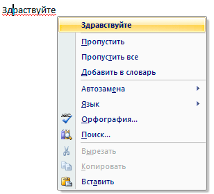

Деловая переписка по электронной почте
Когда мы пишем письмо другу или родственнику, то можем не обращать внимания на ошибки и знаки препинания, как угодно сокращать слова, использовать сленг. Главное, чтобы было понятно, о чем речь. А вот если мы пишем незнакомому или малознакомому человеку и хотим получить от него ответ, то следует учитывать некоторые правила.
Правила общения
1. Всегда указывайте тему письма.
Поле «Тема» должно быть заполнено в любом случае и очень желательно, чтобы оно соответствовало содержанию сообщения.
Хотите вы, например, записаться на консультацию пятого марта, так и напишите: «Запись на консультацию (05.03)».
2. При ответе на письмо сохраняйте историю переписки.
Когда вы получаете от кого-то письмо, то на него можно ответить тремя способами:
- Скопировать адрес отправителя и написать ему новое письмо.
- Нажать на специальное поле для ответа внизу сообщения.
- Использовать кнопку «Ответить».
При деловой переписке отвечать следует третьим способом, то есть нажать на кнопку «Ответить». Откроется новое письмо, повторяющее то, которое вы получили. Тема такая же, только с приставкой «Re:», изначальный текст полностью процитирован.
Это общепринятая форма ответа и вы в ней ничего не должны менять. Свой ответ нужно печатать перед процитированным текстом. Это делается для того, чтобы каждый участник беседы в любой момент мог вспомнить, о чем шла речь.
3. Всегда здоровайтесь и обращайтесь к собеседнику на «вы».
Любое сообщение следует начинать с приветствия. И лучше, если оно будет индивидуальным. Если уместно, называйте собеседника по имени, в противном случае – по имени и отчеству.
Заканчивать письмо желательно конструкцией: С уважением, … (имя/фамилия или имя/отчество).
Например: Здравствуйте, Алексей Петрович. Отправьте, пожалуйста, договор Ивану Михайловичу. С уважением, Илья Кривошеев
4. Отвечайте как можно быстрее.
Чем раньше вы ответите на сообщение, тем лучше. Идеально – в течение нескольких часов. Но допустимо и в течение нескольких суток. Чем дольше тянете с ответом, тем хуже это сказывается на репутации.
Содержание письма
Что касается текста сообщения, то при его написании тоже следует руководствоваться некоторыми правилами.
Пишите конкретно, но подробно
Не заставляйте собеседника догадываться, что вы имели в виду. Если проблема неочевидна, опишите ее как можно подробнее: как получили тот результат, который имеете, чего именно хотите достичь и что требуется от собеседника.
Но это вовсе не означает, что нужно указывать все детали в мельчайших подробностях. Опустите лишнее – цените время другого человека.
Старайтесь писать кратко и по делу
Не нужно, например, рассказывать о том, как поживает ваша жена, теща и прочие родственники.
Что касается размера, то в идеале – один «экран» (без прокрутки). Максимум – размер текста, умещающийся на листе формата А4.
Руководствуйтесь здравым смыслом и правилами приличия
Будьте вежливы, внимательны, благодарите за письма и уделённое время.
Чего делать категорически НЕЛЬЗЯ
1. Злоупотреблять знаками препинания.
Вполне достаточно одного восклицательного или вопросительного знака. Не следует их дублировать. Также не следует злоупотреблять многоточием.
Пример «плохого» письма:
2. Использовать разные шрифты, размер и цвет букв.
Почтовые сайты и программы позволяют менять эти параметры. Можно выбрать необычный шрифт, увеличить или уменьшить буквы, раскрасить текст в разные цвета. Но в деловой переписке это неуместно!
Лучше вообще ничего не менять и оставить всё так, как оно указано по умолчанию. Единственное, что допустимо, это выделить некоторые слова полужирным или курсивным начертанием. Но только если это необходимо!
Пример «плохого» письма:

3. Вставлять смайлики-картинки.
Веселые и грустные рожицы, цветочки и сердечки оставьте для личной переписки. В деловых письмах лучше не использовать смайлики – ни текстовые, ни картинки.
Пример «плохого» письма:
4. Печатать текст заглавными буквами.
Печатать текст большими буквами в интернете считается дурным тоном. Это касается как деловой переписки, так и личной, а также общения в социальных сетях, в скайпе, на форумах и в других местах. Причем это касается как всего текста, так и отдельных слов.
За заглавные буквы отвечает клавиша клавиатуры Caps Lock. То есть, если у вас все буквы набираются большими, нужно просто нажать на нее один раз и отпустить.
Тем более не печатайте большими буквами «Тему» письма - это верх неуважения!
На заметку. Печать отдельных слов и всего текста заглавными буквами воспринимается как крик. А крик – это агрессия, что выходит за рамки культурной переписки.
Если вам очень надо что-то выделить в тексте, лучше сделайте это при помощи полужирного или курсивного начертания.
И еще очень желательно избегать в теме письма слов «Срочно», «Важно» и других, выражающих нетерпение.
Грамотность
Не следует относиться к этому слишком строго, но в своих письмах старайтесь писать грамотно. Несколько простых советов:
- Каждое предложение должно начинаться с большой буквы. Чтобы ее набрать, удерживайте клавишу Shift.
- В конце каждого предложения должна стоять точка. В русской раскладке клавиатуры она находится в нижнем ряду справа (перед Shift).
- Для печати запятой удерживайте Shift и нажмите клавишу с точкой.
- Не ставьте пробел перед запятой или точкой. Пробел должен быть после них.
И еще один совет для тех, кто хоть чуть-чуть умеет пользоваться текстовым редактором Word (Writer). Напечатайте сначала письмо в этой программе. Она подчеркнет красной линией ошибки и, нажав по такому слову правой кнопкой мышки, его можно исправить.
Готовый текст скопируйте и вставьте в поле для письма. Но перед вставкой следует отключить форматирование, чтобы он добавился без оформления из программы Word (Writer).
В почте mail.ru для этого нужно нажать на надпись «Убрать оформление» вверху.
В Яндекс.Почте – кнопку «Отключить оформление» справа.
После вставки оформление можно снова включить.